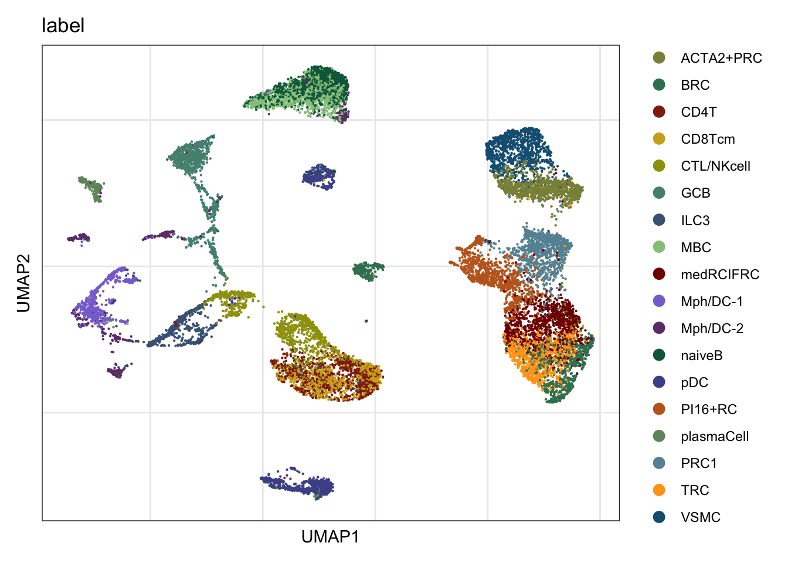

## load packages
suppressPackageStartupMessages({
library(dplyr)
library(reshape2)
library(ggplot2)
library(purrr)
library(Seurat)
library(tidyverse)
library(ggpubr)
library(runSeurat3)
library(here)
library(ggsci)
library(pheatmap)
library(scater)
library(SingleCellExperiment)
library(scran)
library(CellChat)
library(patchwork)
library(ComplexHeatmap)
})run cellchat scRNAseq data on PI16+RC
Load packages
load seurat object
basedir <- here()
seuratFRC <- readRDS(file= paste0(basedir,
"/data/AllPatWithoutCM_FRConly_intOrig",
"_seurat.rds"))
seuratIMM <- readRDS(file= paste0(basedir,
"/data/AllPatWithoutCM_IMMMerged_integrated_label",
"_seurat.rds"))
## add label FRCs
seuratFRC$label <- "medRCIFRC"
seuratFRC$label[which(seuratFRC$intCluster == "7")] <- "BRC"
seuratFRC$label[which(seuratFRC$intCluster == "2")] <- "TRC"
seuratFRC$label[which(seuratFRC$intCluster == "3")] <- "ACTA2+PRC"
seuratFRC$label[which(seuratFRC$intCluster == "4")] <- "VSMC"
seuratFRC$label[which(seuratFRC$intCluster == "5")] <- "PI16+RC"
seuratFRC$label[which(seuratFRC$intCluster == "6")] <- "PRC1"
seuratFRC$cond2 <- seuratFRC$cond
seuratFRC$cond2[which(seuratFRC$cond %in% c("acute", "chronic"))] <- "activated"
## group imm cells
seuratIMM$label2 <- seuratIMM$label
seuratIMM$label <- as.character(seuratIMM$label)
seuratIMM$label[which(seuratIMM$label %in% c("naiveCD4-2", "naiveCD4-3",
"naiveCD4-1", "Treg" ))] <- "CD4T"
seuratIMM$label[which(seuratIMM$label %in% c("pDC-2", "pDC-1" ))] <- "pDC"
seuratIMM$label[which(seuratIMM$label %in% c("naiveB", "preB" ))] <- "naiveB"
seurat <- merge(seuratFRC, c(seuratIMM))
seurat$label_plus_cond <- paste0(seurat$label, "_", seurat$cond2)
table(seurat$label_plus_cond)
ACTA2+PRC_activated ACTA2+PRC_resting BRC_activated BRC_resting
4244 1560 1487 390
CD4T_activated CD4T_resting CD8Tcm_activated CD8Tcm_resting
38543 39380 6234 4006
CTL/NKcell_activated CTL/NKcell_resting GCB_activated GCB_resting
4129 10339 687 869
ILC3_activated ILC3_resting MBC_activated MBC_resting
79 1819 10732 17174
medRCIFRC_activated medRCIFRC_resting Mph/DC-1_activated Mph/DC-1_resting
10342 10129 118 2952
Mph/DC-2_activated Mph/DC-2_resting naiveB_activated naiveB_resting
157 980 8295 14118
pDC_activated pDC_resting PI16+RC_activated PI16+RC_resting
558 6750 1917 986
plasmaCell_activated plasmaCell_resting PRC1_activated PRC1_resting
53 326 1528 760
TRC_activated TRC_resting VSMC_activated VSMC_resting
3164 3773 2767 724 Idents(seurat) <- seurat$label_plus_cond
seurat <- subset(x = seurat, downsample = 500)
table(seurat$label_plus_cond)
ACTA2+PRC_activated ACTA2+PRC_resting BRC_activated BRC_resting
500 500 500 390
CD4T_activated CD4T_resting CD8Tcm_activated CD8Tcm_resting
500 500 500 500
CTL/NKcell_activated CTL/NKcell_resting GCB_activated GCB_resting
500 500 500 500
ILC3_activated ILC3_resting MBC_activated MBC_resting
79 500 500 500
medRCIFRC_activated medRCIFRC_resting Mph/DC-1_activated Mph/DC-1_resting
500 500 118 500
Mph/DC-2_activated Mph/DC-2_resting naiveB_activated naiveB_resting
157 500 500 500
pDC_activated pDC_resting PI16+RC_activated PI16+RC_resting
500 500 500 500
plasmaCell_activated plasmaCell_resting PRC1_activated PRC1_resting
53 326 500 500
TRC_activated TRC_resting VSMC_activated VSMC_resting
500 500 500 500 table(seurat$patient)
P_20200220 P_20200722 P_20200909 P_20210113 P_20210224 P_20220201 P_20220202 ucd010 ucd13
1482 600 1282 1925 1474 2251 2658 1939 1046
ucd14
1466 dim(seurat)[1] 39642 16123remove(seuratIMM, seuratFRC)
seurat <- NormalizeData(object = seurat)
seurat <- FindVariableFeatures(object = seurat)
seurat <- ScaleData(object = seurat, verbose = FALSE)
seurat <- RunPCA(object = seurat, npcs = 30, verbose = FALSE)
seurat <- RunTSNE(object = seurat, reduction = "pca", dims = 1:20)
seurat <- RunUMAP(object = seurat, reduction = "pca", dims = 1:20)set color palettes
colFRC <- c("#800000FF", "#FFA319FF","#8A9045FF", "#155F83FF",
"#C16622FF", "#6692a3", "#3b7f60")
names(colFRC) <- c("medRCIFRC", "TRC", "ACTA2+PRC", "VSMC", "PI16+RC", "PRC1",
"BRC")
colImm <- c("#0b6647", "#54907e", "#94c78a", "#6f9568",
"#8f2810", "#d0ac21","#9e9f0b", "#486584",
"#4b5397", "#8873d3", "#6e3e7a")
names(colImm) <- c("naiveB", "GCB", "MBC", "plasmaCell",
"CD4T", "CD8Tcm", "CTL/NKcell", "ILC3", "pDC",
"Mph/DC-1", "Mph/DC-2")
colAll <- c(colFRC, colImm)
colPal <- c(pal_uchicago()(6), "#6692a3", "#3b7f60")
names(colPal) <- c("0", "1", "2", "3", "4", "5", "6", "7")
colPat <- c(pal_nejm()(7),pal_futurama()(12))[1:length(unique(seurat$patient))]
names(colPat) <- unique(seurat$patient)
colCond <- c("#6692a3","#971c1c","#d17d67")
names(colCond) <- unique(seurat$cond)
colOri <- pal_npg()(length(unique(seurat$origin)))
names(colOri) <- unique(seurat$origin)
colCond2 <- c("#6692a3","#971c1c")
names(colCond2) <- c("resting", "activated")visualize data
label
DimPlot(seurat, reduction = "umap", cols=colAll, group.by = "label")+
theme_bw() +
theme(axis.text = element_blank(), axis.ticks = element_blank(),
panel.grid.minor = element_blank()) +
xlab("UMAP1") +
ylab("UMAP2")
patient
## visualize input data
DimPlot(seurat, reduction = "umap", cols=colPat, group.by = "patient")+
theme_bw() +
theme(axis.text = element_blank(), axis.ticks = element_blank(),
panel.grid.minor = element_blank()) +
xlab("UMAP1") +
ylab("UMAP2")
cond2
## visualize input data
DimPlot(seurat, reduction = "umap", cols=colCond2, group.by = "cond2")+
theme_bw() +
theme(axis.text = element_blank(), axis.ticks = element_blank(),
panel.grid.minor = element_blank()) +
xlab("UMAP1") +
ylab("UMAP2")
origin
## visualize input data
DimPlot(seurat, reduction = "umap", cols=colOri, group.by = "origin")+
theme_bw() +
theme(axis.text = element_blank(), axis.ticks = element_blank(),
panel.grid.minor = element_blank()) +
xlab("UMAP1") +
ylab("UMAP2")
load cellchat object
cellchat.merge <- readRDS(file = paste0(basedir,"/data/cellchat/FRCplusImmune_",
"resPlusActMerge_cellchat.rds"))
cellchat.res <- readRDS(file = paste0(basedir, "/data/cellchat/FRCplusImmune_",
"resOnly_cellchat.rds"))
cellchat.act <- readRDS(file = paste0(basedir, "/data/cellchat/FRCplusImmune_",
"actOnly_cellchat.rds"))
object.list <- list(act = cellchat.act, res = cellchat.res)compare interaction counts/strength
colCond3 <- colCond2
names(colCond3) <- c("res", "act")
gg1 <- compareInteractions(cellchat.merge, show.legend = F,
group = c("act","res")) +
scale_fill_manual(values = colCond3)
gg2 <- compareInteractions(cellchat.merge, show.legend = F,
group = c("act","res"), measure = "weight") +
scale_fill_manual(values = colCond3)
gg1 + gg2
netVisual_diffInteraction(cellchat.merge, weight.scale = T)
netVisual_diffInteraction(cellchat.merge, weight.scale = T, measure = "weight")
gg1 <- netVisual_heatmap(cellchat.merge)
gg2 <- netVisual_heatmap(cellchat.merge, measure = "weight")
gg1 + gg2
par(mfrow = c(1,2), xpd=TRUE)
for(i in 1:length(colCond3)) {
groupSize <- as.numeric(table(cellchat.merge@idents[i])[c("PI16+RC",names(colImm))])
matPre <- cellchat.merge@net[[i]]$weight
mat <- matPre[c("PI16+RC",names(colImm)), c("PI16+RC",names(colImm))]
mat2 <- matrix(0, nrow = nrow(mat), ncol = ncol(mat), dimnames = dimnames(mat))
mat2["PI16+RC", ] <- mat["PI16+RC", ]
netVisual_circle(mat2, vertex.weight = groupSize, weight.scale = T,
edge.weight.max = max(mat), title.name = names(colCond3)[i],
color.use = colAll[c("PI16+RC",names(colImm))])
}
par(mfrow = c(1,2), xpd=TRUE)
for(i in 1:length(colCond3)) {
groupSize <- as.numeric(table(cellchat.merge@idents[i])[c("PI16+RC",names(colImm))])
matPre <- cellchat.merge@net[[i]]$count
mat <- matPre[c("PI16+RC",names(colImm)), c("PI16+RC",names(colImm))]
mat2 <- matrix(0, nrow = nrow(mat), ncol = ncol(mat), dimnames = dimnames(mat))
mat2["PI16+RC", ] <- mat["PI16+RC", ]
netVisual_circle(mat2, vertex.weight = groupSize, weight.scale = T,
edge.weight.max = max(mat), title.name = names(colCond3)[i],
color.use = colAll[c("PI16+RC",names(colImm))])
}
changes in signaling of subsets
num.link <- sapply(object.list, function(x) {rowSums(x@net$count) +
colSums(x@net$count)-diag(x@net$count)})
weight.MinMax <- c(min(num.link), max(num.link))
gg <- list()
for (i in 1:length(object.list)) {
gg[[i]] <- netAnalysis_signalingRole_scatter(object.list[[i]],
title = names(object.list)[i],
weight.MinMax = weight.MinMax)
}
patchwork::wrap_plots(plots = gg)
gg <- list()
for (i in 1:length(object.list)) {
object.list[[i]] <- netAnalysis_computeCentrality(object.list[[i]], slot.name = "net")
gg[[i]] <- netAnalysis_signalingRole_scatter(object.list[[i]],
title = names(object.list)[i],
weight.MinMax = weight.MinMax,
slot.name = "net")
}
patchwork::wrap_plots(plots = gg)
gg1 <- netAnalysis_signalingChanges_scatter(cellchat.merge,
idents.use = "PI16+RC")
gg1
gg1 <- netAnalysis_signalingChanges_scatter(cellchat.merge,
idents.use = "PI16+RC",
xlims = c(-0.01, 0.001),
ylims = c(-0.01, 0.001),
top.label=1)
gg1
signaling pathways between cond
netVisual_embeddingPairwise(cellchat.merge, type = "functional", label.size = 2,
top.label=100)2D visualization of signaling networks from datasets 1 2 
netVisual_embeddingPairwise(cellchat.merge, type = "structural", label.size = 2)2D visualization of signaling networks from datasets 1 2 
rankSimilarity(cellchat.merge, type = "functional")Compute the distance of signaling networks between datasets 1 2 
diff usage of PW PI16+ to imm cells
gg1 <- rankNet(cellchat.merge, mode = "comparison", stacked = T, do.stat = TRUE,
color.use = colCond3, measure = "weight",
sources.use = "PI16+RC", targets.use = c(names(colImm)))
gg3 <- rankNet(cellchat.merge, mode = "comparison", stacked = T, do.stat = TRUE,
color.use = colCond3, measure = "count",
sources.use = "PI16+RC", targets.use = c(names(colImm)))
gg2 <- rankNet(cellchat.merge, mode = "comparison", stacked = F, do.stat = TRUE,
color.use = colCond3,
sources.use = "PI16+RC", targets.use = c(names(colImm)))
gg4 <- rankNet(cellchat.merge, mode = "comparison", stacked = F, do.stat = TRUE,
color.use = colCond3, measure = "count",
sources.use = "PI16+RC", targets.use = c(names(colImm)))
gg1
gg2
gg3
gg4
IF filtered for top PW PI16 to IMM
## Information flow based on interaction strength
IFweight <- rankNet(cellchat.merge, mode = "comparison", stacked = T, do.stat = TRUE,
color.use = colCond3, measure = "weight", return.data = T,
sources.use = "PI16+RC", targets.use = c(names(colImm)))
### filter for Sign PW with IF sign diff and top 10 scaled contribution
IFweightFilAct <- IFweight$signaling.contribution %>%
filter(pvalues < 0.01 & contribution.relative.1 < 1 & group == "act") %>%
slice_max(order_by = contribution.scaled, n = 10)
IFweightFilRes <- IFweight$signaling.contribution %>%
filter(pvalues < 0.01 & contribution.relative.1 > 1 & group == "res") %>%
slice_max(order_by = contribution.scaled, n = 10)
### filter for Sign PW with IF sign diff and top rel contribution
IFweightFilAct2 <- IFweight$signaling.contribution %>%
filter(pvalues < 0.01 & contribution.relative.1 < 1 & group == "act")
gg1 <- rankNet(cellchat.merge, mode = "comparison", stacked = T, do.stat = F,
color.use = colCond3, measure = "weight",
signaling = c(IFweightFilAct$name, IFweightFilRes$name),
sources.use = "PI16+RC", targets.use = c(names(colImm)))
gg2 <- rankNet(cellchat.merge, mode = "comparison", stacked = F, do.stat = TRUE,
color.use = colCond3, , measure = "weight",
signaling = c(IFweightFilAct$name, IFweightFilRes$name),
sources.use = "PI16+RC", targets.use = c(names(colImm)))
gg3 <- rankNet(cellchat.merge, mode = "comparison", stacked = T, do.stat = F,
color.use = colCond3, measure = "weight",
signaling = IFweightFilAct2$name,
sources.use = "PI16+RC", targets.use = c(names(colImm)))
gg1
gg2
gg3
## Information flow based on interaction counts
IFcnts <- rankNet(cellchat.merge, mode = "comparison", stacked = T, do.stat = TRUE,
color.use = colCond3, measure = "count", return.data = T,
sources.use = "PI16+RC", targets.use = c(names(colImm)))
### filter for Sign PW with IF sign diff and top 10 rel contribution
IFcntsFilAct <- IFcnts$signaling.contribution %>%
filter(pvalues < 0.01 & contribution.relative.1 < 1 & group == "act") %>%
slice_max(order_by = contribution.scaled, n = 10)
IFcntsFilRes <- IFcnts$signaling.contribution %>%
filter(pvalues < 0.01 & contribution.relative.1 > 1 & group == "res") %>%
slice_max(order_by = contribution.scaled, n = 10)
### filter for Sign PW with IF sign diff and top rel contribution
IFcntsFilAct2 <- IFcnts$signaling.contribution %>%
filter(pvalues < 0.01 & contribution.relative.1 < 1 & group == "act") %>%
slice_min(order_by = contribution.relative.1, n = 10)
gg1 <- rankNet(cellchat.merge, mode = "comparison", stacked = T, do.stat = F,
color.use = colCond3, measure = "weight",
signaling = c(IFcntsFilAct$name, IFcntsFilRes$name),
sources.use = "PI16+RC", targets.use = c(names(colImm)))
gg2 <- rankNet(cellchat.merge, mode = "comparison", stacked = F, do.stat = TRUE,
color.use = colCond3, measure = "weight",
signaling = c(IFcntsFilAct$name, IFcntsFilRes$name),
sources.use = "PI16+RC", targets.use = names(colImm))
gg3 <- rankNet(cellchat.merge, mode = "comparison", stacked = T, do.stat = F,
color.use = colCond3, measure = "weight",
signaling = IFcntsFilAct2$name,
sources.use = "PI16+RC", targets.use = c(names(colImm)))
gg1
gg2
gg3
vis exp of RL pairs top PW PI16 to IMM
## filter R-L pairs based on PW
LRpairDat <- cellchat.merge@LR[["act"]][["LRsig"]] %>%
filter(pathway_name %in% IFweightFilAct2$name) %>%
dplyr::select(interaction_name)
netVisual_bubble(cellchat.merge, sources.use = "PI16+RC",
targets.use = c("CD4T", "CTL/NKcell", "GCB", "ILC3",
"naiveB", "MBC", "plasmaCell", "CD8Tcm",
"Mph/DC-1", "Mph/DC-2"),
comparison = c(1, 2), angle.x = 45,
pairLR.use = LRpairDat)
LRint <- netVisual_bubble(cellchat.merge, sources.use = "PI16+RC",
targets.use = c("CD4T", "CTL/NKcell", "GCB", "ILC3",
"naiveB", "MBC", "plasmaCell", "CD8Tcm",
"Mph/DC-1", "Mph/DC-2"),
comparison = c(1, 2), angle.x = 45, return.data=T,
pairLR.use = LRpairDat)
LRintFil <- LRint$communication %>%
dplyr::select(target, interaction_name, dataset, prob) %>%
dplyr::group_by(target, interaction_name,) %>%
dplyr::slice(which.max(prob)) %>%
ungroup() %>% filter(dataset=="act") %>%
dplyr::select(interaction_name)
netVisual_bubble(cellchat.merge, sources.use = "PI16+RC",
targets.use = c("CD4T", "CTL/NKcell", "GCB", "ILC3",
"naiveB", "MBC", "plasmaCell", "CD8Tcm",
"Mph/DC-1", "Mph/DC-2"),
comparison = c(1, 2), angle.x = 45,
pairLR.use = LRintFil)
diff usage of PW imm cells to Pi16
gg1 <- rankNet(cellchat.merge, mode = "comparison", stacked = T, do.stat = TRUE,
color.use = colCond3, measure = "weight",
targets.use = "PI16+RC", sources.use = c(names(colImm),"PI16+RC"))
gg3 <- rankNet(cellchat.merge, mode = "comparison", stacked = T, do.stat = TRUE,
color.use = colCond3, measure = "count",
targets.use = "PI16+RC", sources.use = c(names(colImm),"PI16+RC"))
gg2 <- rankNet(cellchat.merge, mode = "comparison", stacked = F, do.stat = TRUE,
color.use = colCond3,
targets.use = "PI16+RC", sources.use = c(names(colImm), "PI16+RC"))
gg4 <- rankNet(cellchat.merge, mode = "comparison", stacked = F, do.stat = TRUE,
color.use = colCond3, measure = "count",
targets.use = "PI16+RC", sources.use = c(names(colImm), "PI16+RC"))
gg1
gg2
gg3
gg4
### sources only imm
gg1 <- rankNet(cellchat.merge, mode = "comparison", stacked = T, do.stat = TRUE,
color.use = colCond3, measure = "weight",
targets.use = "PI16+RC", sources.use = c(names(colImm)))
gg3 <- rankNet(cellchat.merge, mode = "comparison", stacked = T, do.stat = TRUE,
color.use = colCond3, measure = "count",
targets.use = "PI16+RC", sources.use = c(names(colImm)))
gg2 <- rankNet(cellchat.merge, mode = "comparison", stacked = F, do.stat = TRUE,
color.use = colCond3,
targets.use = "PI16+RC", sources.use = c(names(colImm)))
gg4 <- rankNet(cellchat.merge, mode = "comparison", stacked = F, do.stat = TRUE,
color.use = colCond3, measure = "count",
targets.use = "PI16+RC", sources.use = c(names(colImm)))
gg1
gg2
gg3
gg4
IF filtered for top PW IMM plus PI16 to PI16
## Information flow based on interaction strength
IFweight <- rankNet(cellchat.merge, mode = "comparison", stacked = T, do.stat = TRUE,
color.use = colCond3, measure = "weight", return.data = T,
targets.use = "PI16+RC", sources.use = c(names(colImm), "PI16+RC"))
### filter for Sign PW with IF sign diff and top 10 scaled contribution
IFweightFilAct <- IFweight$signaling.contribution %>%
filter(pvalues < 0.01 & contribution.relative.1 < 1 & group == "act") %>%
slice_max(order_by = contribution.scaled, n = 10)
IFweightFilRes <- IFweight$signaling.contribution %>%
filter(pvalues < 0.01 & contribution.relative.1 > 1 & group == "res") %>%
slice_max(order_by = contribution.scaled, n = 10)
### filter for Sign PW with IF sign diff and top rel contribution
IFweightFilAct2 <- IFweight$signaling.contribution %>%
filter(pvalues < 0.01 & contribution.relative.1 < 1 & group == "act")
gg1 <- rankNet(cellchat.merge, mode = "comparison", stacked = T, do.stat = F,
color.use = colCond3, measure = "weight",
signaling = c(IFweightFilAct$name, IFweightFilRes$name),
targets.use = "PI16+RC", sources.use = c(names(colImm), "PI16+RC"))
gg2 <- rankNet(cellchat.merge, mode = "comparison", stacked = F, do.stat = TRUE,
color.use = colCond3, measure = "weight",
signaling = c(IFweightFilAct$name, IFweightFilRes$name),
targets.use = "PI16+RC", sources.use = c(names(colImm), "PI16+RC"))
gg3 <- rankNet(cellchat.merge, mode = "comparison", stacked = T, do.stat = F,
color.use = colCond3, measure = "weight",
signaling = IFweightFilAct2$name,
targets.use = "PI16+RC", sources.use = c(names(colImm), "PI16+RC"))
gg1
gg2
gg3
## Information flow based on interaction counts
IFcnts <- rankNet(cellchat.merge, mode = "comparison", stacked = T, do.stat = TRUE,
color.use = colCond3, measure = "count", return.data = T,
targets.use = "PI16+RC", sources.use = c(names(colImm), "PI16+RC"))
### filter for Sign PW with IF sign diff and top 10 rel contribution
IFcntsFilAct <- IFcnts$signaling.contribution %>%
filter(pvalues < 0.01 & contribution.relative.1 < 1 & group == "act") %>%
slice_max(order_by = contribution.scaled, n = 10)
IFcntsFilRes <- IFcnts$signaling.contribution %>%
filter(pvalues < 0.01 & contribution.relative.1 > 1 & group == "res") %>%
slice_max(order_by = contribution.scaled, n = 10)
### filter for Sign PW with IF sign diff and top rel contribution
IFcntsFilAct2 <- IFcnts$signaling.contribution %>%
filter(pvalues < 0.01 & contribution.relative.1 < 1 & group == "act") %>%
slice_min(order_by = contribution.relative.1, n = 10)
gg1 <- rankNet(cellchat.merge, mode = "comparison", stacked = T, do.stat = F,
color.use = colCond3, measure = "weight",
signaling = c(IFcntsFilAct$name, IFcntsFilRes$name),
targets.use = "PI16+RC", sources.use = c(names(colImm), "PI16+RC"))
gg2 <- rankNet(cellchat.merge, mode = "comparison", stacked = F, do.stat = TRUE,
color.use = colCond3, measure = "weight",
signaling = c(IFcntsFilAct$name, IFcntsFilRes$name),
targets.use = "PI16+RC", sources.use = c(names(colImm), "PI16+RC"))
gg3 <- rankNet(cellchat.merge, mode = "comparison", stacked = T, do.stat = F,
color.use = colCond3, measure = "weight",
signaling = IFcntsFilAct2$name,
targets.use = "PI16+RC", sources.use = c(names(colImm), "PI16+RC"))
gg1
gg2
gg3
vis exp of RL pairs top PW IMM plus PI16 to PI16
## filter R-L pairs based on PW
LRpairDat <- cellchat.merge@LR[["act"]][["LRsig"]] %>%
filter(pathway_name %in% IFweightFilAct2$name) %>%
dplyr::select(interaction_name)
netVisual_bubble(cellchat.merge,
targets.use = "PI16+RC",
sources.use = c(names(colImm), "PI16+RC"),
comparison = c(1, 2), angle.x = 45,
pairLR.use = LRpairDat)
LRint <- netVisual_bubble(cellchat.merge, targets.use = "PI16+RC",
sources.use = c(names(colImm), "PI16+RC"),
comparison = c(1, 2), angle.x = 45, return.data=T,
pairLR.use = LRpairDat)
LRintFil <- LRint$communication %>%
dplyr::select(target, interaction_name, dataset, prob) %>%
dplyr::group_by(target, interaction_name,) %>%
dplyr::slice(which.max(prob)) %>%
ungroup() %>% filter(dataset=="act") %>%
dplyr::select(interaction_name)
netVisual_bubble(cellchat.merge, targets.use = "PI16+RC",
sources.use = c(names(colImm), "PI16+RC"),
comparison = c(1, 2), angle.x = 45,
pairLR.use = LRintFil)
IF filtered for top PW IMM to PI16
## Information flow based on interaction strength
IFweight <- rankNet(cellchat.merge, mode = "comparison", stacked = T, do.stat = TRUE,
color.use = colCond3, measure = "weight", return.data = T,
targets.use = "PI16+RC", sources.use = c(names(colImm)))
### filter for Sign PW with IF sign diff and top rel contribution
IFweightFilAct2 <- IFweight$signaling.contribution %>%
filter(pvalues < 0.01 & contribution.relative.1 < 1 & group == "act")
gg3 <- rankNet(cellchat.merge, mode = "comparison", stacked = T, do.stat = F,
color.use = colCond3, measure = "weight",
signaling = IFweightFilAct2$name,
targets.use = "PI16+RC", sources.use = c(names(colImm)))
gg3
vis exp of RL pairs top PW IMM to PI16
## filter R-L pairs based on PW - source only imm cells
LRpairDat <- cellchat.merge@LR[["act"]][["LRsig"]] %>%
filter(pathway_name %in% IFweightFilAct2$name) %>%
dplyr::select(interaction_name)
netVisual_bubble(cellchat.merge,
targets.use = "PI16+RC",
sources.use = c(names(colImm)),
comparison = c(1, 2), angle.x = 45,
pairLR.use = LRpairDat)
LRint <- netVisual_bubble(cellchat.merge, targets.use = "PI16+RC",
sources.use = c(names(colImm)),
comparison = c(1, 2), angle.x = 45, return.data=T,
pairLR.use = LRpairDat)
LRintFil <- LRint$communication %>%
dplyr::select(target, interaction_name, dataset, prob) %>%
dplyr::group_by(target, interaction_name,) %>%
dplyr::slice(which.max(prob)) %>%
ungroup() %>% filter(dataset=="act") %>%
dplyr::select(interaction_name)
netVisual_bubble(cellchat.merge, targets.use = "PI16+RC",
sources.use = c(names(colImm)),
comparison = c(1, 2), angle.x = 45,
pairLR.use = LRintFil)
in out signalling
i = 1
pathway.union <- union(object.list[[i]]@netP$pathways, object.list[[i+1]]@netP$pathways)
ht1 = netAnalysis_signalingRole_heatmap(object.list[[i]], pattern = "outgoing",
signaling = pathway.union,
title = names(object.list)[i],
width = 12, height = 26)
ht2 = netAnalysis_signalingRole_heatmap(object.list[[i+1]],
pattern = "outgoing",
signaling = pathway.union,
title = names(object.list)[i+1],
width = 12, height = 26)
draw(ht1 + ht2, ht_gap = unit(0.5, "cm"))
ht1 = netAnalysis_signalingRole_heatmap(object.list[[i]], pattern = "incoming",
signaling = pathway.union,
title = names(object.list)[i],
width = 12, height = 26,
color.heatmap = "GnBu")
ht2 = netAnalysis_signalingRole_heatmap(object.list[[i+1]],
pattern = "incoming",
signaling = pathway.union,
title = names(object.list)[i+1],
width = 12, height = 26,
color.heatmap = "GnBu")
draw(ht1 + ht2, ht_gap = unit(0.5, "cm"))
R L pairs
vis exp of RL pairs
netVisual_bubble(cellchat.merge, sources.use = "PI16+RC",
targets.use = c("CD4T", "CTL/NKcell", "GCB", "ILC3",
"naiveB", "MBC", "plasmaCell", "CD8Tcm",
"Mph/DC-1", "Mph/DC-2"),
comparison = c(1, 2), angle.x = 45)
netVisual_bubble(cellchat.merge, sources.use = c("CD4T", "CTL/NKcell", "GCB", "ILC3",
"naiveB", "MBC", "plasmaCell", "CD8Tcm",
"Mph/DC-1", "Mph/DC-2"),
targets.use = "PI16+RC",
comparison = c(1, 2), angle.x = 45)
vis exp of diff RL pairs
##### ----------------- FRC to immune cells ------------------- ######
gg1 <- netVisual_bubble(cellchat.merge, sources.use = "PI16+RC",
targets.use = c("CD4T", "CTL/NKcell", "GCB", "ILC3",
"naiveB", "MBC", "plasmaCell", "CD8Tcm",
"Mph/DC-1", "Mph/DC-2"),
comparison = c(1, 2), max.dataset = 2,
title.name = "Increased signaling in resting", angle.x = 45,
remove.isolate = T)
gg2 <- netVisual_bubble(cellchat.merge, sources.use = "PI16+RC",
targets.use = c("CD4T", "CTL/NKcell", "GCB", "ILC3",
"naiveB", "MBC", "plasmaCell", "CD8Tcm",
"Mph/DC-1", "Mph/DC-2"),
comparison = c(1, 2), max.dataset = 1,
title.name = "Increased signaling in activated", angle.x = 45,
remove.isolate = T)
gg1 + gg2
##### ----------------- Immune cells to FRCs ------------------- ######
gg1 <- netVisual_bubble(cellchat.merge, sources.use = c("CD4T", "CTL/NKcell",
"GCB", "ILC3",
"naiveB", "MBC", "plasmaCell", "CD8Tcm",
"Mph/DC-1", "Mph/DC-2"),
targets.use = "PI16+RC",
comparison = c(1, 2), max.dataset = 2,
title.name = "Increased signaling in resting", angle.x = 45,
remove.isolate = T)
gg2 <- netVisual_bubble(cellchat.merge, sources.use = c("CD4T", "CTL/NKcell",
"GCB", "ILC3",
"naiveB", "MBC", "plasmaCell", "CD8Tcm",
"Mph/DC-1", "Mph/DC-2"),
targets.use = "PI16+RC",
comparison = c(1, 2), max.dataset = 1,
title.name = "Increased signaling in activated", angle.x = 45,
remove.isolate = T)
gg1 + gg2
session info
sessionInfo()R version 4.3.0 (2023-04-21)
Platform: x86_64-apple-darwin20 (64-bit)
Running under: macOS Ventura 13.4.1
Matrix products: default
BLAS: /Library/Frameworks/R.framework/Versions/4.3-x86_64/Resources/lib/libRblas.0.dylib
LAPACK: /Library/Frameworks/R.framework/Versions/4.3-x86_64/Resources/lib/libRlapack.dylib; LAPACK version 3.11.0
locale:
[1] en_US.UTF-8/en_US.UTF-8/en_US.UTF-8/C/en_US.UTF-8/en_US.UTF-8
time zone: Europe/Berlin
tzcode source: internal
attached base packages:
[1] grid stats4 stats graphics grDevices utils datasets methods base
other attached packages:
[1] ComplexHeatmap_2.16.0 patchwork_1.2.0 CellChat_1.6.1
[4] igraph_2.0.2 scran_1.28.2 scater_1.28.0
[7] scuttle_1.10.3 SingleCellExperiment_1.22.0 SummarizedExperiment_1.30.2
[10] Biobase_2.60.0 GenomicRanges_1.52.1 GenomeInfoDb_1.36.4
[13] IRanges_2.36.0 S4Vectors_0.40.1 BiocGenerics_0.48.0
[16] MatrixGenerics_1.12.3 matrixStats_1.2.0 pheatmap_1.0.12
[19] ggsci_3.0.0 here_1.0.1 runSeurat3_0.1.0
[22] ggpubr_0.6.0 lubridate_1.9.3 forcats_1.0.0
[25] stringr_1.5.1 readr_2.1.5 tidyr_1.3.1
[28] tibble_3.2.1 tidyverse_2.0.0 Seurat_5.0.1
[31] SeuratObject_5.0.1 sp_2.1-3 purrr_1.0.2
[34] ggplot2_3.4.4 reshape2_1.4.4 dplyr_1.1.4
loaded via a namespace (and not attached):
[1] spatstat.sparse_3.0-3 bitops_1.0-7 httr_1.4.7
[4] RColorBrewer_1.1-3 doParallel_1.0.17 tools_4.3.0
[7] sctransform_0.4.1 backports_1.4.1 utf8_1.2.4
[10] R6_2.5.1 lazyeval_0.2.2 uwot_0.1.16
[13] GetoptLong_1.0.5 withr_3.0.0 gridExtra_2.3
[16] progressr_0.14.0 cli_3.6.2 Cairo_1.6-2
[19] spatstat.explore_3.2-6 fastDummies_1.7.3 network_1.18.2
[22] labeling_0.4.3 spatstat.data_3.0-4 ggridges_0.5.6
[25] pbapply_1.7-2 systemfonts_1.0.5 svglite_2.1.3
[28] parallelly_1.37.0 limma_3.56.2 rstudioapi_0.15.0
[31] FNN_1.1.4 generics_0.1.3 shape_1.4.6
[34] ica_1.0-3 spatstat.random_3.2-2 car_3.1-2
[37] Matrix_1.6-5 ggbeeswarm_0.7.2 fansi_1.0.6
[40] abind_1.4-5 lifecycle_1.0.4 yaml_2.3.8
[43] edgeR_3.42.4 carData_3.0-5 Rtsne_0.17
[46] promises_1.2.1 dqrng_0.3.2 crayon_1.5.2
[49] miniUI_0.1.1.1 lattice_0.22-5 beachmat_2.16.0
[52] cowplot_1.1.3 magick_2.8.3 sna_2.7-2
[55] pillar_1.9.0 knitr_1.45 metapod_1.8.0
[58] rjson_0.2.21 future.apply_1.11.1 codetools_0.2-19
[61] leiden_0.4.3.1 glue_1.7.0 data.table_1.15.0
[64] vctrs_0.6.5 png_0.1-8 spam_2.10-0
[67] gtable_0.3.4 xfun_0.42 S4Arrays_1.0.6
[70] mime_0.12 coda_0.19-4.1 survival_3.5-8
[73] iterators_1.0.14 statmod_1.5.0 bluster_1.10.0
[76] ellipsis_0.3.2 fitdistrplus_1.1-11 ROCR_1.0-11
[79] nlme_3.1-164 RcppAnnoy_0.0.22 rprojroot_2.0.4
[82] irlba_2.3.5.1 vipor_0.4.7 KernSmooth_2.23-22
[85] colorspace_2.1-0 tidyselect_1.2.0 compiler_4.3.0
[88] BiocNeighbors_1.18.0 DelayedArray_0.26.7 plotly_4.10.4
[91] scales_1.3.0 lmtest_0.9-40 NMF_0.27
[94] digest_0.6.34 goftest_1.2-3 spatstat.utils_3.0-4
[97] rmarkdown_2.25 XVector_0.40.0 htmltools_0.5.7
[100] pkgconfig_2.0.3 sparseMatrixStats_1.12.2 fastmap_1.1.1
[103] rlang_1.1.3 GlobalOptions_0.1.2 htmlwidgets_1.6.4
[106] shiny_1.8.0 DelayedMatrixStats_1.22.6 farver_2.1.1
[109] zoo_1.8-12 jsonlite_1.8.8 statnet.common_4.9.0
[112] BiocParallel_1.34.2 BiocSingular_1.16.0 RCurl_1.98-1.14
[115] magrittr_2.0.3 ggnetwork_0.5.13 GenomeInfoDbData_1.2.10
[118] dotCall64_1.1-1 munsell_0.5.0 Rcpp_1.0.12
[121] viridis_0.6.5 reticulate_1.35.0 stringi_1.8.3
[124] ggalluvial_0.12.5 zlibbioc_1.46.0 MASS_7.3-60.0.1
[127] plyr_1.8.9 parallel_4.3.0 listenv_0.9.1
[130] ggrepel_0.9.5 deldir_2.0-2 splines_4.3.0
[133] tensor_1.5 hms_1.1.3 circlize_0.4.16
[136] locfit_1.5-9.8 spatstat.geom_3.2-8 ggsignif_0.6.4
[139] RcppHNSW_0.6.0 rngtools_1.5.2 ScaledMatrix_1.8.1
[142] evaluate_0.23 tzdb_0.4.0 foreach_1.5.2
[145] httpuv_1.6.14 RANN_2.6.1 polyclip_1.10-6
[148] future_1.33.1 clue_0.3-65 scattermore_1.2
[151] gridBase_0.4-7 rsvd_1.0.5 broom_1.0.5
[154] xtable_1.8-4 RSpectra_0.16-1 rstatix_0.7.2
[157] later_1.3.2 viridisLite_0.4.2 beeswarm_0.4.0
[160] registry_0.5-1 cluster_2.1.6 timechange_0.3.0
[163] globals_0.16.2 date()[1] "Thu Mar 7 09:15:56 2024"